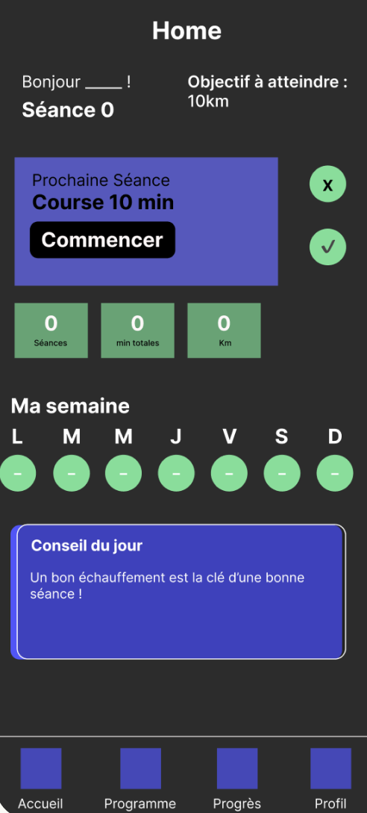
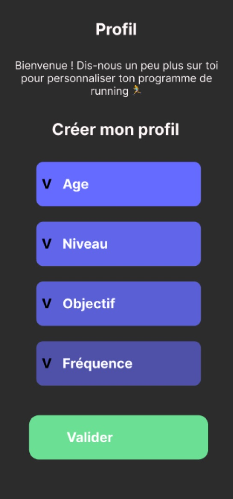

Case study — UX/UI design
Application mobile pour aider les débutants à se (re)mettre au running de façon douce et motivante.
UX Research Wireframing Figma Mobile01 — Le problème
Les personnes qui souhaitent commencer à courir se heurtent toujours aux mêmes obstacles : elles ne savent pas par où commencer, se blessent par manque de méthode, ou se découragent avant de voir des résultats.
Les applis existantes ciblent des coureurs déjà actifs. Il manque une solution pensée pour les vrais débutants, qui soit simple, rassurante et progressive.
02 — Les utilisateurs
Julie, 20 ans
Étudiante, Lyon — vie sédentaire
François, 42 ans
Chauffeur-livreur, Île-de-France
03 — Ce que j'ai retenu
04 — Mes décisions visuelles
Chaque écran d'authentification porte un message d'encouragement ("N'oublie pas, tout le monde a commencé quelque part"). Ce choix répond directement à la peur du jugement ressentie par François et au besoin de douceur de Julie.
Après l'inscription, l'utilisateur renseigne son âge, son niveau, son objectif et sa fréquence souhaitée. Ces 4 questions permettent d'adapter le programme dès le premier jour.
Sur le tableau de bord, l'utilisateur peut valider la séance proposée (✓) ou la refuser (✗) pour en recevoir une alternative. Ce mécanisme supprime la pression de "devoir" faire une séance précise
Seulement 3 chiffres en page d'accueil : séances, minutes totales, kilomètres. Suffisant pour voir sa progression, sans intimider un débutant avec trop de données.

